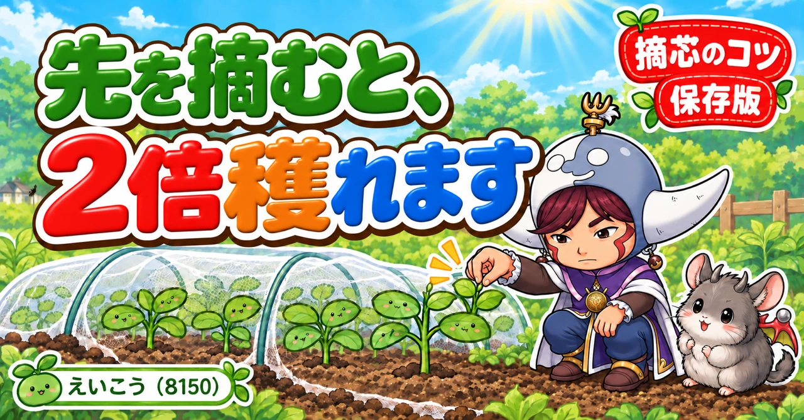
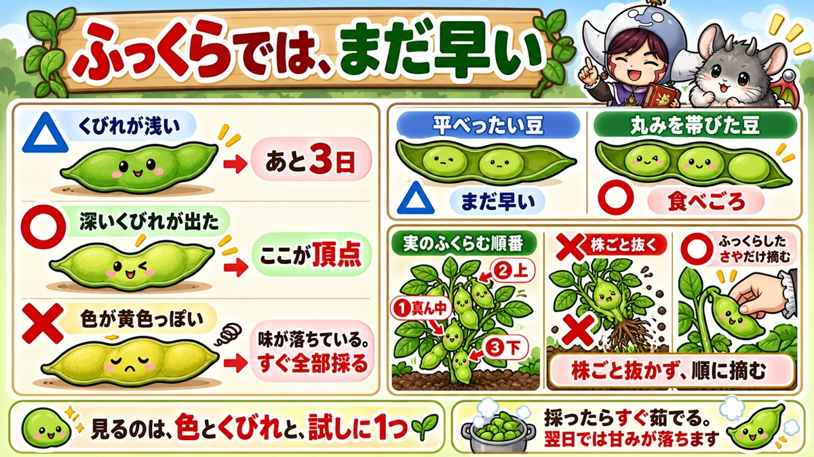
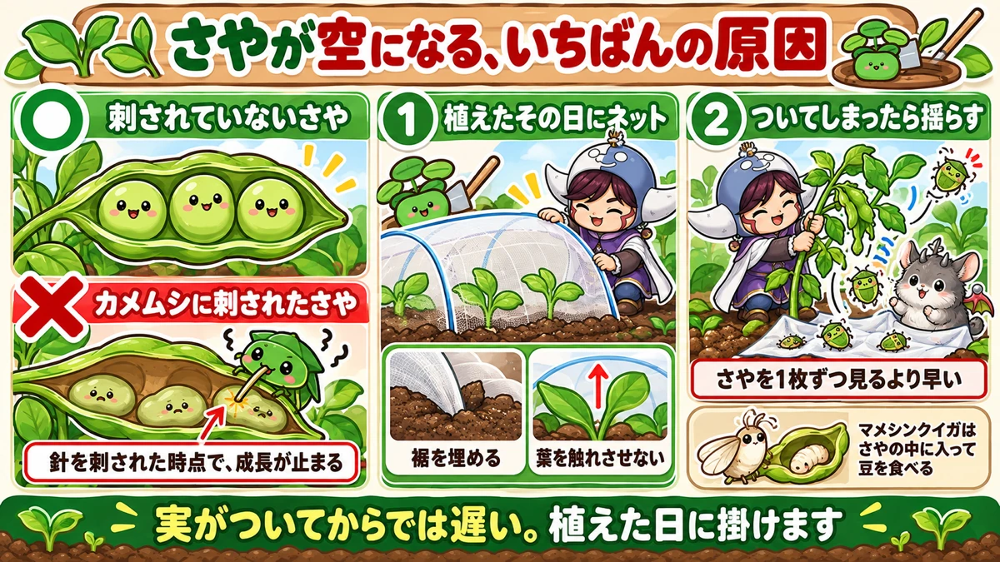

枝豆の育て方｜種まき・水やり・空さや診断と収穫の見極め

どうも、8150（えいこう）です🌱 家庭菜園歴8年、理科の教員免許を持っていて、有機・無農薬で野菜を育てています。
📖 この記事の目次
この記事で分かること
- 初めてなら、夏の虫が増える前に採りやすい早生系から計画します。
- 肥料は前作の履歴を見て控えめに。大きな葉だけで栽培の順調さを判断しません。
- 摘心は選べる仕立て方です。苗の早い段階と本葉が増えてからでは、やり方も目的も変わります。
- 開花から豆が太る間は、土の中の乾きと虫の侵入を重点的に確認します。
- 食べ頃は日付だけでは決まりません。さやの色、横から見た形、中の豆を重ねて調べます。
- まき時や肥料の説明が違うときは、品種・土・季節をそろえて比べます。
枝豆で目指したいのは、立派な葉を育てることより、食べたい日に丸く太った豆を採ることです。葉は元気そうなのに、さやを開くとぺらっとしている。そんなとき、追加の肥料に手が伸びる前に見たい場所があります。
土が乾いているのか。虫が入れるすき間があるのか。まだ豆が育つ途中なのか。この順に分ければ、なんか難しそうな『空さや』も、調べる項目に変えられます。
8150（えいこう）です🌱 このページは、枝豆をこれから育てるみなさんにも、すでに株を見ながら困っているみなさんにも使える段取り帳としてまとめました。最初から通して読む必要はありません。始める前は早見と手順、困ったら症状の章、判断が割れたら両論の章を開いてください。
『早くまけばよい』『肥料はいっさい不要』『先を切れば収量倍増』。短くすると覚えやすいのですが、条件を落とすと、別の畑では話がつながらなくなります。ここでは、何を見てその方法を選ぶのかまで残します。大丈夫、毎回全部を調べるわけではありません。今の生育段階で見る場所を絞れば十分です☺️
早見：枝豆の育て方（ひと目で分かる数字）
種袋と照らし合わせる数字
- 標準のまき時：一般地では4〜6月が目安です。これは全品種をこの期間ならいつでもまけるという意味ではなく、選んだ品種の地域別表示を優先します。
- 保温して始める早まき：2月中旬〜3月から育苗し、4月中旬以降に畑へ移す栽培例があります。寒い時期の無保温直まきと同じ条件ではありません。
- 夏まき：6〜7月にまき、秋に採る中生・晩生の例もあります。春まき向けの種を、そのまま夏へずらす計画にはしません。
- 地域差：寒い地域では地温と遅霜を確認して開始を遅らせます。暖かい地域でも、品種の適期と夏の暑さ、虫が多くなる時期を確認してください。
- 温度：発芽しやすい温度は25〜30℃、生育に向く温度は20〜25℃という説明です。無保温の直まきでは地温15℃以上を目安にし、育苗時は35℃以上の高温を避けます。
- 種の数：1穴4粒から丈夫な2本を残す方法が複数あります。3〜4粒から2本、1粒ずつ育苗する方法などもあるので、最終的に何本育てるかと組み合わせます。
- まく深さ：5mm〜2cm程度と栽培例によって幅があります。畑では約2cm、容器では約1cmという説明もあり、土・季節・種袋の指示を確認します。
- 株間：20〜30cmと説明が分かれます。1穴2本の例なら25〜30cmを参考にし、混み合いやすい品種では表示に合わせてください。
- 列間：二列植えで約30cmという例があります。株間と列間を取り違えないよう、縦と横の間隔を別々に決めます。
- うね幅：全国共通の指定は材料にありません。一列か二列か、株の広がり、ネットの内側の余裕、作業通路を確保して決めます。
- 植え付け：通常の苗では、種まきから約2〜3週間、初生葉が開くころの例があります。本葉2〜3枚の苗という説明もあり、日数だけで決めません。
- 早い摘心をした苗：初生葉の段階で先を切り、脇芽を伸ばしてから植える方法は、通常より定植が約2週間遅れるという説明です。
- 本葉が増えてからの摘心：本葉5〜6枚を目安にする方法があります。草丈は15〜20cm、20〜25cm、約40cmなど例が違うため、高さだけを共通の合図にしません。
- 元肥：前作の肥料が残る畑では、追加せず始めるのが基本です。新しい畑や極端にやせた土は、初期の不足を補う少量施肥を検討する立場もあります。
- 追肥：定期的に行う予定は置きません。生育が悪ければ、乾燥・過湿・根の不調を先に確認し、不足が考えられる場合だけ調整します。
- 水分を見る深さ：株元の土を2〜3cmほど掘って確認する例があります。表面の色や雨の有無だけで水やりを決めないための目安です。
- ずらしまき：約2週間あけて数回まく方法があります。どの回も品種のまき時の範囲に収めます。
- 収穫までの日数：早生で種まきから約80日前後という例があります。特定品種の説明は約76〜85日ですが、一般の枝豆すべての収穫幅にはしません。種袋の日数と実際の豆の太りを併用します。
- 収穫の適期：食べ頃の幅を3〜5日ほどとする説明があります。気温や株で変わり、残り何日と一律に数えるための数字ではありません。
- 株ごと採る割合：さや全体の7〜9割が太ったところを目安にする説明です。未熟なさやを残したい場合は、太ったものだけ切り取ります。
- 連作の間隔：マメ科を2〜3年作っていない場所を選ぶ説明と、3〜5年あける説明があります。一方、枝豆を続ける栽培例もあります。年数だけで安全を保証せず、初心者の基本は次の作物をマメ科以外にする計画です。
数字を組み合わせる前に、条件をそろえる
早見は、いちばん小さい数字を寄せ集めるためのものではありません。早まきの日付、狭い株間、長く育つ品種を組み合わせれば、どの例とも違う栽培になります。まずは手元の種袋を基準にして、その方法と同じ条件の数字を拾います。
例えば『1穴2本、二列植え』なら、一列の株間だけを見て終わらせず、列間とネットの幅も確認します。葉が広がったあとにネットへ押しつけられそうなら、間隔かトンネルの形を見直す。小さな苗のときの見た目だけで場所を詰めないのがコツです。
収穫日数も、種をまいた日からか、芽が出た日からか、花が咲いてからかで意味が変わります。約80日という種まき起点の例に、開花起点の数字を足す必要はありません。材料には開花後の日数の単位が不明瞭な例もあるため、ここでは固定の開花後日数を作っていません。
- 品種の早生・中生・晩生と、地域別のまき時を見た
- 一穴に残す本数、株間、列間を一緒に決めた
- 前に何を育て、どのくらい肥料を入れたか確認した
- 種まき日と発芽日を分けて記録することにした
- 収穫予定は目安にし、近づいたらさやを直接見ることにした
このチェックができれば、数値の違いに振り回されにくくなります。みなさんの畑に合う段取りを作るのが目的なので、早見と違う表示でも、条件を確かめて選べば大丈夫です。
作業の手順（時期の順）
1．収穫したい季節から品種を選ぶ
- 夏の虫が多くなる前に採りたいのか、秋の味を楽しみたいのかを決めます。
- 初めての無農薬栽培なら、春から始められる早生系を候補にします。
- 種袋の地域別のまき時、育つまでの日数、株間を確認します。
- 一度に食べる量が多すぎないよう、まく回数と一回分の場所を決めます。
早生は育つ期間が短く、盛夏の虫が多い時期を避けやすいのが利点です。中生・晩生は、草丈が高くなり収量を取りやすいという説明がある一方、暖かい季節の虫と乾燥を長く管理する必要があります。『早生なら簡単、中生なら失敗』という分け方にはしません。
茶豆系や黒豆系も、味だけで選んで日程を後回しにしないでください。材料にある秋どりの例を、どの系統にも当てはめることはできません。同じ呼び方でも品種の性質を確認し、地元の種苗店や近くで育てている人に土地との相性を聞くと、選択肢を絞りやすくなります。
約2週間ずつまき時をずらせば、収穫の山を分ける計画が立てられます。ただし、最後の回が適期を外れないことが前提です。一袋を一日で使い切るより、食べる予定から区切る。枝豆では、この準備も栽培のうちなんですよね。
2．前作の履歴と、水の逃げ道を調べる
- その場所で前に育てた作物と、肥料を入れた履歴を調べます。
- 日当たりを確認し、雨のあとに水がたまる場所を見ます。
- 根が伸びにくい硬い部分をほぐし、うねと通路を準備します。
- 前作の肥料が残っていそうなら、新たな元肥を加えず始める計画にします。
枝豆は、植える前にたっぷり肥料を入れておけば安心という野菜ではありません。窒素が多いと葉と茎が伸びやすくなり、さやとの釣り合いを崩します。見た目が立派だから成功、と喜ぶと、あとで豆の数に「あれ？」となることがあります。
一方、畑を初めて使う場合や極端にやせた土は、前作のある場所と同じには考えられません。少量の初期施肥を検討する説明もありますが、ここで一律の資材名や量を決めるのは避けます。まず土の履歴と水はけを確認し、不足の見込みがある場合だけ、窒素を多くしない方向で調整します。
水がたまる問題は、肥料の量では直りません。根と根粒菌が働く場所を整えることが先です。ネットを張る場所もこの段階で考え、裾を閉じる場所、通路から株を見る場所を残してください。
3．直まきか育苗かを、寒さと鳥害で決める
- 地温と遅霜の心配を確認します。暖かくなっていれば直まきを候補にします。
- 寒い時期に始めるなら、保温して苗を作る方法を選びます。
- 種をまく前に、土の水分を確認します。湿っている土へ水を重ねません。
- 種袋に合わせて深さを決め、覆土後は土と種が離れないよう軽く押さえます。
- 畑へ直まきした場所は、その日から鳥と虫を防ぐ覆いを整えます。
畑で発芽まで時間がかかると、そのぶん鳥に種を見つけられる機会も長くなります。豆の形を残した芽が狙われることもあるので、種を埋めたら鳥よけ終了、とはいかないんですよね。育苗は、まだ小さい時期を管理しやすい場所で過ごさせる方法でもあります。
一穴4粒から2本を残す方法を使うなら、まいた時点で『最後まで4本』と勘違いしないよう記録します。まく数と残す数は別です。深さは畑の約2cmという例だけで決めず、容器や土の乾きやすさ、種袋の表示を確認してください。
乾いた夏の土と、湿った梅雨の土では水の扱いも変わります。まき終えたら必ず大量に水をかける、という手順にはしません。水が必要な土なのかを見てから補います。
4．発芽後は、温度と水分の管理を切り替える
- 発芽までは保温を管理し、高温になりすぎないよう確認します。
- 芽が出たら、発芽のための覆いを残したままにせず、苗の状態に合わせて外します。
- 育苗土の表面を見て、乾いたときに水を与えます。
- 茎の伸び方と葉の開き方を確認し、湿り続ける状態を避けます。
保温は、掛けたらそれで終わりの作業ではありません。発芽しやすい温度と、蒸れたり高温になったりする状態は分けて考えます。35℃以上を避けるという育苗の目安もあるので、晴れた日には覆いの内側がどうなっているかを見てください。
『覆いを外す』のは、発芽のために使った保温やベタ掛けの覆いの話です。畑で虫の侵入を防ぐネットまで、同じタイミングで全部外す意味ではありません。目的を分けると、芽が出たから無防備にするという取り違えを防げます。
ひょろっとした苗を見て、水が足りないのかと追加すると、過湿が原因なら逆に進めてしまいます。曇天で土が湿っている日は、毎日の当番のように水を足さなくて大丈夫です。
5．必要な本数を残し、苗を植える
- 一穴に残す本数を決め、丈夫な苗を選びます。
- 間引く苗を抜くと隣の根まで動きそうな場合は、地際で切ります。
- 苗を使う場合は、植える前に根鉢へ水を含ませます。
- 決めた株間・列間で植え、植えたあとの水分を整えます。
- 株元がぐらつく場所は土を寄せ、軽く押さえます。
苗の植え付けは、種まきから約2〜3週間という通常苗の例を参考にできます。ただ、初生葉の段階で先を摘み、脇芽を待つ苗づくりは別の日程です。同じ日数で両方の苗を植えようとせず、葉と芽の状態を確認します。
二本残す栽培では、『二本のまとまり』同士の距離が株間です。二本を一組にする方法を選びながら、あとから一本ごとの密植と混ぜないようにしてください。葉が広がる場所があってこそ、ネットの余裕や観察する通路も確保できます。
土寄せは、間引き後や株元のぐらつきに合わせる作業です。材料には共通の固定回数がないので、予定表に何回と置くより、根元が支えられているかを見ます。風で株が動いているなら、肥料を考える前にここを確認してください。
6．ネットは裾だけでなく、内側の株も確認する
- 直まき・植え付け直後から、鳥よけを兼ねて防虫ネットを設置します。
- 裾を土で押さえ、端や出入り口に開きがないか確かめます。
- 葉が伸びても網へ押しつけられない高さと横幅を取ります。
- 後から掛ける場合は、葉の表裏、卵や虫を調べてから閉じます。
- 作業で開けたあとは、裾まで戻って閉じ直します。
ネットは、すでにいる虫を消してくれる道具ではありません。虫や卵を閉じ込めると、中で被害が進むことがあります。後掛けの方法を使うなら、設置前の株の点検を一緒に行う必要があります。
葉が網へ接する状態にも注意します。外側から産卵される可能性があるという説明があり、通気も悪くなります。裾だけきれいに閉じて天井がぎゅうぎゅう、では足りません。背が伸びたらトンネルを上げるなど、株の大きさに合わせて余裕を作ります。
早どりで虫の盛期を避ける栽培にはネットを省く説明もありますが、無農薬で始める基本は最初から覆う方法に置きます。早生にすることとネットを使うことは、どちらか一つしか選べない対策ではありません。
7．摘心するなら、二つの方法を混ぜない
- 品種の草丈と、ネット内に収めたい高さを確認します。
- 早い苗づくりを選ぶなら、双葉の次の初生葉を残して先端の芽を摘みます。
- 育った株で行うなら、本葉5〜6枚を目安に主茎の先端を摘む方法を検討します。
- 摘んだあとは脇芽の伸びを見て、ネットに当たる部分や混み具合を確認します。
本葉を数えるときは、三枚一組の葉を一枚として数えます。双葉、次に出る二枚の初生葉、その上に出る三枚一組の本葉。この順に見れば、一枚ずつの小さな葉を全部足してしまう間違いを防げます。
早い摘心は苗の段階で二本の芽を伸ばす仕立て方です。本葉が増えてから行う方法の『早めにやった版』とだけ捉えると、定植までの待ち方が抜けます。先端を切る位置を確認できないときに、葉ごと大きく切り取る必要はありません。
摘心には、脇芽とさやの付く位置を増やしやすくする狙いがあります。ただし、早生では収量差が小さい場合もあり、全株で必須にしません。中生・晩生で背を抑えたい、ネットに触れさせたくないという目的なら、収量だけで評価せず選べます。
8．花が見えたら、水を見る場所を土の中に移す
- 開花を確認した日を記録します。
- 株元を2〜3cmほど掘り、中の乾きを調べます。
- 乾いていたら、朝か夕方に株元やうね間へ水を補います。
- 湿っている場合は追加せず、水がたまるなら排水も見ます。
- さやが付いてから豆が太る間も、同じ確認を続けます。
開花から約10日でさやが急に大きくなるという説明があります。この数字は、10日で収穫できるという意味ではありません。花からさやへ変わる時期に、水不足を放置しないための手がかりです。
雨が降ったから水やり不要、と決める前に土の中を見ます。葉が茂ると、上からの水が株元へ届きにくい場合もあります。逆に表面だけ乾いて見えても、中が湿っていれば追加しない。見たいのは天気の名前より、根がある場所の水分です。
真昼の熱い面へ流したり、ホースの中で熱くなった水をそのまま株元へかけたりしないようにします。乾燥を抑えるには、わらや刈った草を周りへ敷く方法もあります。覆ったら水分確認が不要になるわけではないので、土の中を見る習慣は残してください。
9．葉の元気さに加えて、さやの付き方を調べる
- 葉色、葉の大きさ、茎の太さを見ます。
- 花やさやがどのくらい付いているかを一緒に確認します。
- 濃い葉ばかり大きくなり、さやが少ないときは追加施肥を止めます。
- 葉色が薄い場合も、先に水分・根の状態・前作の履歴を調べます。
- ネット内の傷んだ下葉や枯れ葉を整理し、健全な葉をむやみに減らしません。
枝豆に『何週間おきの追肥』を自動で当てはめないのが、この手順のポイントです。肥料不足以外の原因で育ちが悪いときに足すと、困りごとを増やす場合があります。元肥なしで始めたことだけを理由に、途中で必ず補う必要もありません。
傷んだ葉の整理は、光や風が通る場所を作るための作業です。穴が一つある葉と、枯れて機能しなくなった葉を同じに扱わないでください。豆を太らせる健全な葉まで、風通しのために大量に切るという手順ではありません。
10．さやを横から見て、収穫方法を選ぶ
- 収穫予定が近づいたら、株の中段・上段・下段を見比べます。
- 緑色がきれいに残っているか、豆の間のくびれが深くなったかを見ます。
- 横から見て丸みを確認し、迷う場合は一さや開いて中の豆を調べます。
- 太りがそろわなければ、食べ頃のさやを先に切り取ります。
- 全体の7〜9割ほどが太り、一度に使えるなら株ごとの収穫も候補にします。

中段から太り、そのあと上下へ進むという説明があります。真ん中の一さやを見て全株が同じ状態だと思わず、何か所か見るのがコツです。株ごと抜く方法にも、一度に片づけやすい利点があります。残りの未熟なさやを育てたいかどうかで選んでください。
浅いくびれのさやは、あと2〜3日ほどで形が進む例もあります。だからといって、どの株も必ず3日待つわけではありません。夏の暑い時期は進みが速く、黄色へ変わり始めているさやは待つより収穫を優先します。予定表より実物、ここはほんまに大事です。
11．台所へ運ぶ段取りと、次の作物まで決める
- 調理できる時間を見て収穫します。
- 虫穴のあるさやや傷みのあるものを分けます。
- 採ったものはその日のうちに速やかに調理し、難しい場合は先に冷やします。
- 採り終えた株と土の状態を確認し、次に植える作物を選びます。
- 初めてなら、後作はマメ科以外から選びます。
収穫して畑に長く置き、その後に調理の準備を始めると、採れたてを味わう予定が後ろへずれます。先に台所で使える時間を決めてから採るほうが、収穫後の置き時間を短くできます。枝付きで持ち帰る方法もありますが、それで何日も保存できるという扱いにはしません。
早い時期に片づいた場所なら、にんじんやオクラなど、季節に合うマメ科以外の後作を検討できます。秋なら葉物や大根なども候補です。根粒菌の付いた根を土へ戻す考えはありますが、次の作物に必要な養分が全部そろうという意味ではありません。
枝豆のあとに再び枝豆を作る例もあります。ただ、夏の虫や乾燥の管理に連作の条件が重なるので、最初の一作と同じ難しさではありません。まず一作の記録を残し、次は別の科へ切り替える。そのほうが、次に困ったときにも条件を整理しやすいかなと思います。
失敗の見分け方（症状→原因→やること）
困った株は、見た目を一つの言葉でまとめず、どこに変化があるかを分けます。『元気がない』だけでは、乾燥にも過湿にも肥料不足にも見えてしまいます。種、茎、葉、さや、土と見る場所を決めると、次に確認することが絞れます。
種をまいたのに、芽が見えない
- 症状：予定の発芽時期を過ぎても、まいた穴に芽がありません。
- 考えられる原因：低温、霜、乾燥、過湿、種の深さ、鳥害が候補です。
- やること：種まき日と種袋の発芽目安を照合し、土の湿りと気温、種や芽が持ち去られた形跡を見ます。
1〜2週間で出なければ早めに追いまきする例がありますが、全品種の発芽期限にはしません。冷たい土へ同じようにまき直したり、湿った土へ水を足したりする前に、出なかった条件を変えます。雨が続いたのか、乾いたのかを記録すると、まき直しで同じことを繰り返しにくくなります。
苗の茎が細く長くなり、支えにくい
- 症状：小さな苗の茎だけが伸び、倒れやすくなっています。
- 考えられる原因：育苗中の過湿など、苗づくりの環境が候補です。
- やること：表面が乾いているか、覆いの内側が高温になっていないかを確認し、毎日の固定水やりをやめます。
倒れそうだからすぐ土へ植える、と急ぐ前に、今の苗の環境を見てください。保温のための覆いを発芽後も同じ状態で残していないかを調べます。細い茎だけを見て肥料を足すより、水と温度の管理を見直すほうが先です。
植えた株がぐらつき、育ちが止まったように見える
- 症状：株元が安定せず、新しい葉も増えにくい状態です。
- 考えられる原因：根の周りの土の支え不足、乾燥、過湿、根の傷みなどが考えられます。
- やること：根元を見て必要なら土を寄せ、水のたまり方と土中の乾きを確認します。
間引きで隣の苗まで動かしていなかったか、植え付け後に水がたまり続けていないかも振り返ります。肥料を入れたら根がその場で元通りになるわけではありません。今の根が水を使える状態かどうかを確かめてから、養分の話へ進みます。
葉が濃く大きいのに、さやが少ない
- 症状：茎が太く、葉が茂るわりに花やさやの付き方が弱い状態です。
- 考えられる原因：前作の残肥や元肥の入れすぎによる窒素過多が候補です。
- やること：追加の肥料を止め、葉だけでなくさやの数と大きさを追います。
これは、見た目が元気なため気づきにくい症状です。大きな葉をさらに育てようと追肥すると、豆を採る目的から遠ざかる場合があります。高さがネットに当たるなら、ネットを上げるか仕立て方を検討しますが、先を切れば窒素過多が全部解消するとは考えません。
葉色が薄く、株も小さい
- 症状：葉の色が淡く、生育の進みも遅い状態です。
- 考えられる原因：乾燥、過湿、根傷み、新しい畑で根粒菌の働きが十分でないこと、養分不足などです。
- やること：土の水分と排水、植え付け後の根元、畑の履歴を先に調べます。
『枝豆は無肥料』を守るために何も見ないのも、『薄い葉は肥料不足』で即追加するのも、確認が足りません。水や根の問題がないかを見て、極端にやせた土で不足が考えられる場合だけ少量の補給を検討します。葉色一つで根粒菌がいるか、働いているかまでは断定できません。
花が落ちる、さやが付いても平たいまま
- 症状：花が落ちたり、付いたさやが薄い状態のまま進まなかったりします。
- 考えられる原因：開花・肥大期の水不足、虫の被害、まだ育つ途中であることを分けて考えます。
- やること：株元を2〜3cm掘り、乾きを確認します。同時に葉裏とさや、ネットの裾を調べます。

土が乾いていれば水の管理を変えます。湿っているなら、水をさらに足すのではなく害虫の痕跡や生育段階を見ます。収穫予定からまだ遠い薄いさやと、食べ頃の株で太らないさやは同じ診断にしません。新しく付いたさやまで全部空さやと決める前に、付いた時期を確かめましょう。
豆に黒い点や褐色の変化がある
- 症状：さやの中の豆に点状の傷や変色があり、太り方にも差があります。
- 考えられる原因：カメムシの吸汁被害が候補になります。
- やること：株にいる虫、葉裏、ネットの開き、葉と網の接触を確認します。
カメムシは針のような口で汁を吸い、豆の育ちや品質に影響します。ただ、点があれば必ずカメムシと写真なしで確定するものではありません。被害の場所と虫の存在を合わせて見ます。すでに被害を受けた豆が、その後ネットを閉じるだけで元に戻るとは考えず、これからのさやを守る方向へ切り替えます。
さやに穴があり、中の豆が食われている
- 症状：さやの穴や、内部の食べられた豆が見つかります。
- 考えられる原因：マメシンクイガの幼虫など、さや内へ入る虫が候補です。
- やること：疑わしいさやを開いて確認し、虫穴のあるものを分け、他のさやとネットを点検します。
外から吸う虫と中へ入って食べる虫では、見つかる痕跡が違います。空っぽだったから全部カメムシ、とまとめると、さや内の被害を見落とします。葉の表裏も調べ、卵や虫がある状態で覆い直していないか確認してください。
ネットの内側に虫がいる
- 症状：覆っているのに、葉やさやで虫、卵、食害が見つかります。
- 考えられる原因：後掛け前からいた虫、裾や端の開き、作業後の閉じ忘れ、網へ触れた葉が候補です。
- やること：中の株を調べて虫や卵を取り除き、閉じる前に侵入経路を見直します。
ネットがある事実だけで防除が完了したとは判断できません。入口が閉じているか、中に残っていないか、外と接する葉がないか。この三つを別々に見ます。毎回大きく開けて長時間点検するという意味ではなく、必要な場所を見て作業後に戻す手順を決めると続けやすくなります。
葉に穴が増える、葉裏に虫が集まる
- 症状：葉の穴や欠け、葉裏に集まる小さな虫が見つかります。
- 考えられる原因：ハムシ、ヨトウムシ、アブラムシなどが候補です。
- やること：穴のある葉だけでなく裏側、株元、周囲も観察し、見つけた虫を取り除きます。
穴の形だけで虫の名前を言い切らず、実物を探します。ネットの内側でも観察が必要な理由はここです。傷んだ葉を整理する場合も、新しい葉や健全な葉を残して、これからの生育を守ることを優先してください。
葉がネットに押しつけられ、傷んだ下葉が増える
- 症状：トンネル内が混み、葉の接触や傷みが目立ちます。
- 考えられる原因：ネットの高さ・幅不足や通気の悪さが考えられます。
- やること：トンネルを上げ、枯れた葉や傷んだ下葉を整理し、仕立て方も見直します。
虫を防ごうとして株をぎゅっと押し込めると、別の管理が難しくなります。株の大きさに合わせて空間を作ることもネット管理です。混んでいるから株全体を丸刈りにするのではなく、接触している場所と傷んだ葉を分けて見てください。
さやが割れる、土がずっと湿っている
- 症状：さやの割れが見られ、根元も乾かない状態です。
- 考えられる原因：水の与えすぎや過湿が候補です。湿り続ける土では根腐れも気にします。
- やること：固定の水やりを止め、土中水分と水の逃げ道を確認します。
花が咲いてから水が大切という話は、湿っていても足すという意味ではありません。さやの症状だけで原因を確定せず、いつ水を与え、雨がどのくらい続き、土がどうなったかを合わせて見ます。病名ごとの治療を見た目だけで決める段階には進めません。
さやが黄色へ変わり、豆が硬くなってきた
- 症状：緑色が薄れ、食べ頃の枝豆と質感が変わっています。
- 考えられる原因：収穫の遅れが候補です。
- やること：まだ枝豆として採る目的なら収穫を優先し、さらに待って甘くなると決めつけません。
黄色へ進んでから、若い緑の状態へ戻す方法はありません。大豆や採種へ目的を替える説明もありますが、枝豆の食べ頃を延ばす方法とは別です。次の回は、さやが丸くなり始めた時点から観察頻度を上げると、採り遅れを避けやすくなります。
説明が分かれていること
栽培の説明が違うときは、どちらかをすぐ間違いにしなくて大丈夫です。品種、季節、畑の履歴が違えば、同じ枝豆でも選ぶ作業が変わります。ここでは、動画由来の説明を条件ごとに分けます。数値が割れる部分は平均して一つにせず、何を確認して選ぶかを残します。
まき時は2〜3月か、4〜6月か
- Aという説明：保温して2〜3月に始め、早めの収穫で夏の虫を避けます。
- Bという説明：一般地の標準は4〜6月で、暖かい土で始めます。
- どう考えればよいか：早まきは育苗や保温が前提です。無保温の直まきは地温と遅霜を確認し、種袋の地域別表示に合わせます。
収穫を急ぐ目的だけを受け取り、保温の条件を抜くと発芽や霜で困りやすくなります。逆に4〜6月という標準があるからといって、早まきの栽培例を消す必要もありません。開始日だけで比べず、どこで芽を出し、いつ畑へ移すのかまで比べます。
初心者は早生だけか、中生・晩生も選べるか
- Aという説明：無農薬で始めるなら、害虫の盛期を避けやすい早生を選びます。
- Bという説明：中生・晩生は草丈や収量を生かし、摘心して育てる候補です。
- どう考えればよいか：早生は管理期間を短くする選択、中生・晩生は長い管理を引き受ける選択です。味や収量だけでなく、通える頻度とネットの余裕も見ます。
初めては早生を中心にするのが整理しやすいものの、それだけが正解ではありません。夏の乾燥期にも土を見られるか、虫を点検できるかを先に考えると、秋どりに挑戦する準備も具体的になります。
株間は20cmか、25〜30cmか
- Aという説明：一列植えでは約20cmという例があります。
- Bという説明：二列や一穴二本の方法では、25〜30cm程度の例があります。
- どう考えればよいか：一本か二本か、列の数、品種の広がりが違います。株間だけを単独で借りず、種袋と最終本数を合わせます。
二列にして株間も詰めると、葉が広がったときに網へ触れやすくなる場合があります。小苗が収まることと、収穫前の株が収まることは違います。密植の実例もありますが、地域や栽培環境が異なるため、全国の標準へ置き換えません。
まく深さは5mm〜1cmか、約2cmか
- Aという説明：夏まきや容器栽培で、5mm〜1cm程度の例があります。
- Bという説明：畑の種まきでは、約2cmとして乾きにくくする例があります。
- どう考えればよいか：土、容器、季節の違いを見ます。浅さ・深さを平均せず、まず種袋の表示に合わせます。
同じ深さでも、乾きやすい土と湿り続ける土では種の周りの状態が変わります。芽が出なかったときも深さだけを責めず、土中水分、低温、鳥害まで調べる必要があります。
元肥・追肥ともなしでよいか、最初だけ補うか
- Aという説明：前作のある畑では元肥も追肥も加えず、窒素を抑えます。
- Bという説明：初期の根粒菌の働きを待つ間、少量の元肥で生育を助けます。
- どう考えればよいか：残肥のある土と、新しいやせた土を分けます。共通するのは、窒素を多くせず、濃く茂る株へ追加しないことです。
追肥も、不要を基本にする説明と、生育不良や後半の不足を見て補う説明があります。違いを『何回が正解』へまとめず、最初の土の条件と株の症状から考えます。根粒菌の活動についての特定の月数も一例の説明なので、種まきから何日で必ず追肥するという予定にはしません。
摘心は初生葉のころか、本葉5〜6枚か
- Aという説明：苗の初生葉段階で先端を摘み、二本の芽を伸ばしてから植えます。
- Bという説明：育った株で本葉5〜6枚を数え、主茎の先を摘みます。
- どう考えればよいか：別の仕立て方です。苗を作る段取りと、畑で高さを抑える段取りを一つに混ぜません。
草丈の説明も15〜20cm、20〜25cm、約40cmと幅があります。高さが違っていても本葉の段数を目安にする説明があるため、背丈だけで判定しないことが大切です。どの葉を本葉として数えるかを先に確認します。
摘心すれば増収するか、しなくてもよいか
- Aという説明：脇芽を増やすことで花やさやの付く位置が増え、収量増加を狙います。
- Bという説明：早生では収量差が小さい場合があり、必須の作業ではありません。
- どう考えればよいか：品種と栽培期間を見ます。背を抑えてネット内へ収める目的もありますが、倍増を全株の保証にはしません。
切ったあとに芽が増えても、その芽に付くさやが全部十分に太るとは限りません。水、虫、葉の働き、残りの時間も関係します。収量の数字だけを期待して全株へ行うより、目的を決めて仕立て方を選ぶほうが判断しやすくなります。
ネットは最初からか、実が付く前からか
- Aという説明：種まきや定植の直後から設置し、鳥害と虫の侵入をまとめて防ぎます。
- Bという説明：さやが付く前や梅雨前に掛ける、または早どりでは省く方法があります。
- どう考えればよいか：後掛けには株の虫と卵の点検が必要です。無農薬の初心者向けには、直後から覆う方法を基本にします。
早どりで虫の盛期を避ける条件と、夏まきで虫が多い季節を通る条件は違います。ある早まきの説明で省略できても、夏の株へそのまま広げません。最初から使う場合も、設置後の裾と葉の接触は確認します。
開花後は毎日水をやるか、乾いたときだけか
- Aという説明：花から実が太る時期には、十分な水を確保します。
- Bという説明：土が湿っていれば追加せず、乾いた場合だけ与えます。
- どう考えればよいか：必要な時期を示す話と、与える日の判断を示す話です。開花後は土中の確認を増やし、不足分を補います。
この二つは、いつも反対の説明というわけではありません。『開花後に水不足を避ける』ために『湿った日は足さない』という運用ができます。梅雨だからやらない、花が咲いたから必ずやる、のどちらにも固定しません。
収穫はさやごとか、株ごとか
- Aという説明：太ったさやから切り取り、残りを育てます。
- Bという説明：全体の7〜9割程度が太ったら株ごと採り、一度に使います。
- どう考えればよいか：食べ頃をそろえたいならさやごと、まとまった収穫と片づけを優先するなら株ごとが候補です。
株ごとの方法を、どんな場合にも禁止する必要はありません。逆に、一つ太っただけで全部抜けば、未熟なさやも同時に採ることになります。株の中の太り方と、その日に調理できる量を合わせて選んでください。
マメ科を数年あけるか、枝豆を続けるか
- Aという説明：マメ科の連作を避け、2〜3年または3〜5年あける目安があります。
- Bという説明：早どりのあとに再び枝豆をまく栽培例があります。
- どう考えればよいか：二期作の実例があることと、どの土でも続けて安全ということは分けます。初めてはマメ科以外の後作を選びます。
夏の二作目には、虫と乾燥を管理する難しさも加わります。成功例だけを根拠に連作の懸念を消さず、自分の畑の病気や生育の履歴を残します。休ませる年数も、平均して一つの保証値にはしません。
よくある質問
初めてなら、どんな枝豆を選べばよいですか
春から始められる早生系を中心に、地域のまき時に合うものを選びます。夏の虫が多い時期を避けやすいのが利点です。地元で安定して育つ品種を聞き、種袋の表示と照らし合わせてください。
茶豆系や黒豆系は、どれも秋まで育てますか
呼び方だけで収穫期は決まりません。材料には秋どりの例がありますが、系統全体へ日程を広げないようにします。選んだ品種のまき時と収穫目安を見て、枝豆として若採りするのか、大豆まで育てるのかも分けてください。
3月に畑へ直接まいてもよいですか
保温した早まきの例はありますが、無保温の直まきとは条件が違います。地温、霜の心配、品種の適期を確認します。早めに始めたい場合は、苗を管理してから畑へ移す方法も候補です。
一穴に4粒まいたら、4本とも残してよいですか
ここで基本にしたのは、4粒から丈夫な2本を残す方法です。最終本数は株間と組み合わせて決めます。三本をまとめて育てる別の例もありますが、異なる方法の種数と株間を混ぜて密植にしないようにしてください。
プランターでも育てられますか
容器で育てる材料はあります。ただし、最小の容量・深さ・植える本数の共通値は確認できていません。畑の二列植えの数字をそのまま使わず、品種の表示と容器で葉が広がる余裕、水分管理を確認します。
市販の土なら、肥料を足してからまきますか
すでに肥料が含まれているかを先に見ます。新しい容器でも、使う土に養分があれば『新しい畑だから少量足す』という話とは条件が違います。窒素を重ねて入れないことを優先します。
草丈が10cmになったら、追肥するのですか
草丈だけを合図にした定期追肥は、この手順に置いていません。まず葉、さや、土の湿り、前作の肥料を見ます。育ちが悪い場合も水や根の問題を調べてから、不足が考えられる場合だけ補います。
摘心は、しないと失敗しますか
必須ではありません。早生では収量の差が小さいという説明もあります。背が高くなる品種や、ネットへ触れそうな株で、脇芽を増やす・高さを抑える目的に合わせて選ぶ作業です。
本葉5枚は、小さな葉を5枚数えるのですか
三枚一組になった本葉を一枚として数えます。最初の双葉と、その上に出る二枚の初生葉は本葉の数へ入れません。葉の出る順をたどってから数えると、摘む時期を取り違えにくくなります。
摘心したら、収量は必ず2倍になりますか
倍増の保証にはできません。脇芽や着さや位置を増やす狙いがあっても、品種、生育期間、水、虫の被害で結果が変わります。ネット内へ収めたいなど、収量以外の目的も含めて選んでください。
花が咲いたら、雨の日も水をやりますか
土の中が湿っていれば追加しません。雨の有無だけではなく、株元を2〜3cm掘って乾き具合を見ます。開花後は水不足を避けたい時期ですが、過湿を作る必要はありません。
葉の上から水をかければ、根にも届きますか
茂った葉で水が遮られ、土へ十分届かない場合があります。乾いた土への水は株元やうね間へ向け、土中の湿りで確かめます。真昼の熱い面やホース内の熱水にも注意してください。
ネットは、花が咲いたら外しますか
開花を理由に外す手順にはしていません。さやへ来る虫を防ぐ目的もあるので、株が当たらない空間を保ちます。ネットに頭がつかえたときは、外す前にトンネルを上げるなどの調整を考えます。
平たいさやは、全部虫にやられたものですか
育つ途中、水不足、吸汁や内部の食害を分けて見ます。土中水分と、さやの穴、豆の傷、株の虫を合わせて確認してください。新しく付いたさやを、収穫間近の空さやと同じに扱わないことも大切です。
日が少ないときは、追肥を増やしてよいですか
生育がゆっくりという理由だけでは増やしません。まず土の水分、根、虫、現在の生育段階を見ます。日照不足を空さやの確定原因とする材料は十分に整理されていないため、天気だけで診断を終わらせないようにします。
根に粒があったら、病気ですか
マメ科には根粒菌が住む根粒ができるため、粒があるだけで病気とは決められません。ただし、根の異常を色だけで根粒と断定する方法にはしません。根の形と株の育ち、不調の有無も合わせて見ます。
収穫日は、種袋の日数どおりでよいですか
日数は観察を始める目安に使います。最後はさやの色、横からの丸み、豆の間のくびれ、中の豆を確認します。天候や品種で進み方が変わるので、暦だけで全株を抜きません。
くびれが浅かったら、必ず3日待ちますか
2〜3日で進む例はありますが、固定の待ち時間ではありません。その後の色と形を短い間隔で見ます。すでに黄色へ変わり始めたさやを、決めた日数のために残すことは避けてください。
株ごと抜くのは、よくない方法ですか
全体の7〜9割程度が太り、その日に使えるなら選択肢です。まだ薄いさやを育てたいなら、太ったさやから切ります。どちらも方法としてあり、太りのそろい方と調理の予定で選びます。
採ったあと、台所へ持ち帰るまで枝を外してよいですか
枝付きで持ち帰る方法もありますが、運び方より放置する時間を短くすることを優先します。採った日の速やかな調理を予定し、すぐ使えない場合は先に冷やします。長期保存できる根拠として枝付きの話を使わないでください。
採り遅れたものを、そのまま次の種にできますか
完全に枯らし、十分乾かして採種へ回す説明は一例あります。ただ、今食べる枝豆を保管する方法とは別です。すべての株で同じ品質の種が取れると保証せず、採種へ目的を変える場合だけ検討します。
収穫後は、何を育てるのがよいですか
収穫の季節に合うマメ科以外の作物を基本にします。早どり後ならにんじんやオクラ、秋なら葉物や大根などが候補です。前作の根を戻しただけで肥料が全部足りるとは考えず、次の作物の条件を確認します。
学ぶ：枝豆と根粒菌のしくみ🔬
根にある粒は、菌が暮らす場所
枝豆の根には、根粒という小さなふくらみができることがあります。その中で暮らすのが根粒菌です。根に粒があると、初めて見る人はなんか病気っぽく感じるかもしれません。でも、マメ科が菌と関係を作っている様子でもあります。
ここで分けたいのは、『根粒』という場所と、『根粒菌』という生き物です。白い粒そのものが独立した肥料の袋というわけではありません。菌が中で働き、植物の栄養に関わる関係が根にできています。
観察するなら、収穫して片づけるときに根の形を見てみてください。育っている途中で全株を掘り返す必要はありません。小さな粒がどこに付いているか、根全体はどう伸びたかを見れば、地上の葉だけでは分からなかった部分に目が向きます。
ただし、根のふくらみを色だけで正常な根粒と判定しないようにします。不調の株で根の形に異常がある場合は、粒の存在だけで安心せず、株の生育や土の状態と合わせて考えます。
空気の窒素は、そのままでは使えない
空気には窒素が多く含まれています。でも、植物が空気中の窒素をそのまま吸って、葉の材料にできるわけではありません。使える形へ変える過程が必要です。
根粒菌は、空気の窒素を植物が利用できる形へ変える働きをします。枝豆はその窒素を利用し、葉や茎などを育てます。『マメ科は肥料を控えられる』という話の背景に、この関係があります。
反対に、枝豆から菌へも渡しているものがあります。葉で光合成して作った養分です。菌が一方的に無料で窒素を届けるのではなく、植物の側も、菌が働くための養分を渡しています。双方が関わる、共生という関係なんですね。
だから葉の働きと根の働きを切り離しすぎないことが大切です。ネット内で健全な葉を大量に落とす、根が湿り続けても放置する。そうした管理をして、根粒菌だけへ期待を集中させることはできません。
窒素が多い土では、関係も変わる
土に窒素が多いと、根粒菌の数が減るという説明があります。根粒菌がいるから、土の窒素をいくら増やしても同じように働く、とはならないんです。
葉と茎ばかり大きくなり、さやの付き方が弱くなる状態をつるボケと呼びます。肥料の効果は、株が大きくなったかだけで判断できません。枝豆として食べたいのは若い豆なので、葉の量と豆の量を一緒に見る必要があります。
前作で肥料を多く入れた畑に、枝豆にも同じ量を入れると、土の条件を見落とします。根粒菌の話は『肥料を少なくして節約できる』だけではなく、『足しすぎない理由がある』という管理の話へつながります。
根粒菌がいることと、初期の不足がないことは別
種をまいた直後から、どんな土でも同じように根粒菌が働くとは限りません。最初は土にある養分を使い、その後に菌との関係へつなぐという説明があります。新しい畑や極端にやせた土で少量の初期施肥を検討するのは、そのためです。
通気や排水が悪い土は、根粒菌が付きにくい条件にもなります。葉色が薄いときに、まず土の水分と根を見たいのは、成分の量だけで問題が決まらないからです。根が働く場所が整っていなければ、足すことだけでは解決しません。
『マメ科だから無条件で肥料ゼロ』と『薄い葉ならすぐ窒素追加』の間に、観察して判断する段階を置きます。根粒を見つけたか、株はどの段階か、前作の養分はあるか。理科の仕組みを知ると、この確認の意味が分かりやすくなります。
芽が増えることと、豆が太ることは別の段階
摘心で主茎の先端を摘むと、脇の芽が伸び、枝分かれした形を作りやすくなります。これが、花やさやの付く位置を増やすという説明につながります。
ただ、位置が増えたあとには、花が育ち、さやができ、豆が太る段階が残っています。水不足や虫の被害があれば、その場所で十分な豆が育たない場合があります。『芽が二本だから収穫も二倍』と、途中の過程を飛ばさない理由です。
早生は育つ期間が短く、摘心の収量差が小さいことがあるという説明もあります。中生・晩生の話を、期間が短い早生へそのまま持っていかないようにします。増収の狙いと高さを抑える狙いを分ければ、摘心する理由もはっきりします。
花と豆の時期に水分を見る理由
花が咲き、さやができ、豆がふくらむ間は水の不足を避けたい時期です。材料では開花時の乾燥で花が落ちることや、肥大期に豆が太らないことが説明されています。葉が出る段階からずっと同じ水やりにしないのは、この変化があるためです。
その一方で、水が多ければ多いほどよいわけではありません。土が湿り続けると根の状態に影響し、根腐れも考えます。水を必要とする時期であっても、すでに十分湿っている土へ追加する理由にはなりません。
株元を少し掘る作業は、見えない根の環境を確かめるための観察です。葉の表情、さやの形、土の中を並べて見ると、水が必要な株か、虫を探す株かの判断がつながります。覚える数字を増やすより、一か所確かめる意味を知るほうが役立つこともありますね。
さやの形は、中の豆の進み方を映す
豆がふくらむと、外から見たさやの丸みや豆同士の間のくびれが変わります。横からの形を見るのは、内部の変化を外側から読む方法です。さらに一さや開けば、その形の中にどのくらい丸い豆が入っていたかを確かめられます。
ここで見ているのは、糖度計の数値ではありません。材料には深いくびれを食べ頃の目安にする説明がありますが、形だけで糖度の頂点を断定する測定値は示されていません。色と形と試し割りを合わせる、という使い方にします。
収穫が遅れれば、若い豆を食べる枝豆の段階から、乾いた大豆へ向かいます。大きくなったものをできるだけ長く残すのが、いつも味のためによいとは限りません。『今は丸いけど、まだ緑』『そろそろ黄色い』という変化を実物で見ると、短い食べ頃を待ちすぎない理由も分かってきます🔬
まとめ
枝豆の管理は、品種と季節を合わせ、開花後の水分と虫を見て、食べ頃の短い変化を追う段取りです。肥料を足し続ける予定より、今の株で何を確認するかを決めておくほうが、困ったときに動きやすくなります。
これから始めるなら、次の順で準備してください。
- 早生・中生・晩生から、収穫したい季節と管理できる期間に合うものを選ぶ
- 種袋の地域別のまき時、日数、株間を確認する
- 前作の肥料とマメ科の履歴、水のたまり方を調べる
- 最終的な本数と列数を決め、ネットと作業通路の余裕を残す
- 種まき・発芽・植え付けを分けて記録する
育てている株がある場合は、今の段階から確認します。
- 発芽前なら、土の温度と湿り、鳥害を見ます。
- 小苗なら、覆いの中の高温、過湿、茎の伸び方を調べます。
- 葉が増えたら、葉色だけでなく、花やさやの付き方とネットの接触を見ます。
- 開花から豆の肥大までは、土中水分と虫の痕跡を確認します。
- 収穫前は、株の何か所かの色と形を見て、必要なら一さや開きます。
さやが薄いときは、水不足、虫、育つ途中を分けます。葉が濃く茂るのに実が少ないときは、追加施肥を止めて履歴を見直します。葉色が薄いときも、土と根の状態を先に見る。この確認順があれば、『何か足さなあかんかな』だけで対応を決めずにすみます。
摘心の有無やネットの時期、株ごと収穫するかどうかには複数の説明があります。どれも一つに統一するより、品種、季節、株の形、使う量に合わせて選んでください。元肥なしという基本にも、やせた新しい土の例外があります。数字を覚えるときは、その数字が使われた条件も一緒に残します。
採れたものは、調理までの時間を短くする予定を先に作ります。株ごと採るならその日に使えるか、さやごとなら食べ頃だけ選べるかを考える。収穫後の数日を待つ計画より、採った日の味を楽しむ段取りに寄せたいですね。
ここまで読んでくださって、ありがとうございます。今日一つ確認するなら、開花している株では株元の土を少し掘ってみてください。収穫が近い株なら、さやを横から見て、迷った一つを開いてみましょう。実物を確かめて「今はこっちやな」と選べるところから、次の作業を始めれば大丈夫です☺️
枝豆のタネ
摘心して枝を増やす育て方をするので、株数はそこまで要りません。粒の大きい品種がおすすめです。
![[商品価格に関しましては、リンクが作成された時点と現時点で情報が変更されている場合がございます。]](https://hbb.afl.rakuten.co.jp/hgb/552615f0.9cc2855e.552615f1.776f7de9/?me_id=1251188&item_id=10000185&pc=https%3A%2F%2Fthumbnail.image.rakuten.co.jp%2F%400_mall%2Fyonezawa%2Fcabinet%2Ftane01%2F1011mame%2Fbeerfriendgf.jpg%3F_ex%3D240x240&s=240x240&t=picttext "[商品価格に関しましては、リンクが作成された時点と現時点で情報が変更されている場合がございます。]")

防虫ネット
カメムシにさやを刺されると中身が残りません。花が咲く前からかけておきます。
![[商品価格に関しましては、リンクが作成された時点と現時点で情報が変更されている場合がございます。]](https://hbb.afl.rakuten.co.jp/hgb/56bc205d.0066fedc.56bc205e.af56d163/?me_id=1260467&item_id=10000299&pc=https%3A%2F%2Fthumbnail.image.rakuten.co.jp%2F%400_mall%2Fmarsol-morishita%2Fcabinet%2Fshouhinn%2Fbouchuu%2Fimgrc0090950099.jpg%3F_ex%3D240x240&s=240x240&t=picttext "[商品価格に関しましては、リンクが作成された時点と現時点で情報が変更されている場合がございます。]")
米ぬか
根粒菌が働くので窒素は控えめでいいのですが、土の微生物は多いほうが安定します。
![[商品価格に関しましては、リンクが作成された時点と現時点で情報が変更されている場合がございます。]](https://hbb.afl.rakuten.co.jp/hgb/56d21cb1.eebb183f.56d21cb2.51de80a8/?me_id=1247635&item_id=10000021&pc=https%3A%2F%2Fthumbnail.image.rakuten.co.jp%2F%400_mall%2Feco-hiryo%2Fcabinet%2Fitem6%2Fset-1-a1.jpg%3F_ex%3D240x240&s=240x240&t=picttext "[商品価格に関しましては、リンクが作成された時点と現時点で情報が変更されている場合がございます。]")